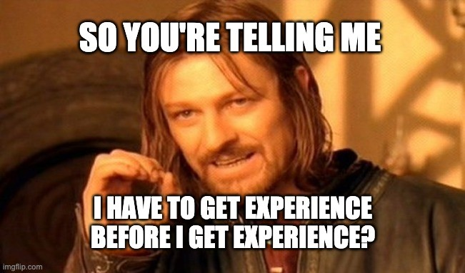
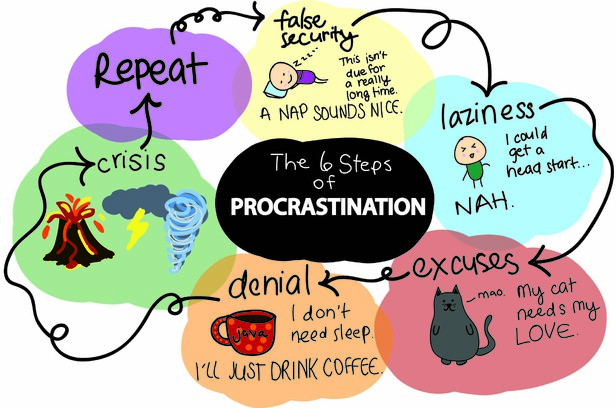

Job Application Process overview

Frontend
Backend
- Recommendation letter
- Following up (networking)
- Technical skill AlgoExpert
- final round 🎉
Tips


“If you chase two rabbits, BOTH will escape”.
“A life worth living is a life worth recording.” Jim Rohn
Don’t Does
- Underdress
- Interview without preparation
- Celebrate early
- Change direction
Do Does

Coding
Write a function that reverse a string!
Offer
Salary negotiation 🙌🎉🎊
Resource
Conclusion
Thank you for listening